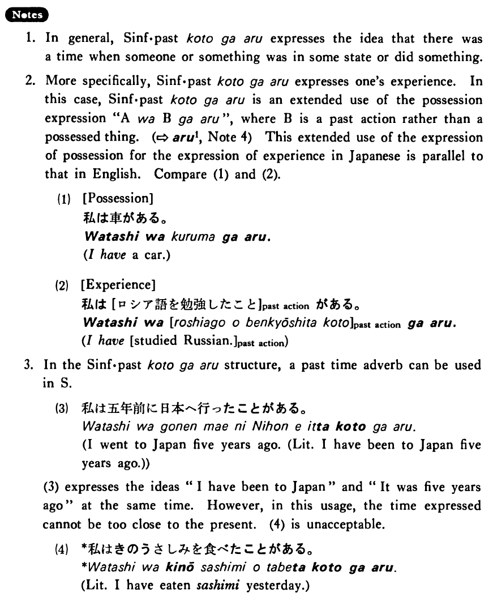

←
DoJG
→
ことがある (1)
(B. 196)
Example sentences
(ks).
私はヨーロッパへ行った
ことがある・あります
。
I have been to Europe.
(ks).
レタスがとても高かった
ことがある・あります
。
There was a time when lettuce was very expensive.
(a).
私は中学校で英語を教えた
ことがあります
。
I have taught English at a junior high school.
(b).
小川さんはまだゴルフをした
ことがない
。
Mr. Ogawa hasn't played golf yet.
(c).
私は日本の小説をよく読んだ
ことがある
。
There was a time when I read a lot of Japanese novels.
(d).
スーザンは一時ジャズがとても好きだった
ことがある
。
There was a time when Susan liked jazz a lot.
(e).
私はプロ野球選手だった
ことがあります
。
There was a time when I was a professional baseball player.
Formation
Sinformal past
ことがある
話した
ことがある
Have talked
高かった
ことがある
There was a time when something was expensive
静かだった
ことがある
There was a time when something was quiet
先生だった
ことがある
There was a time when someone was a teacher
